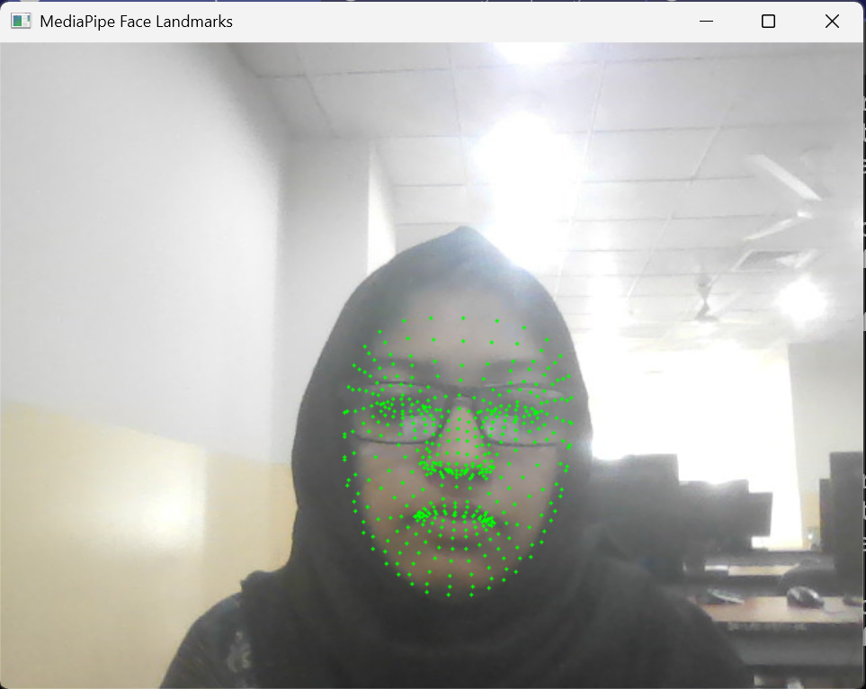
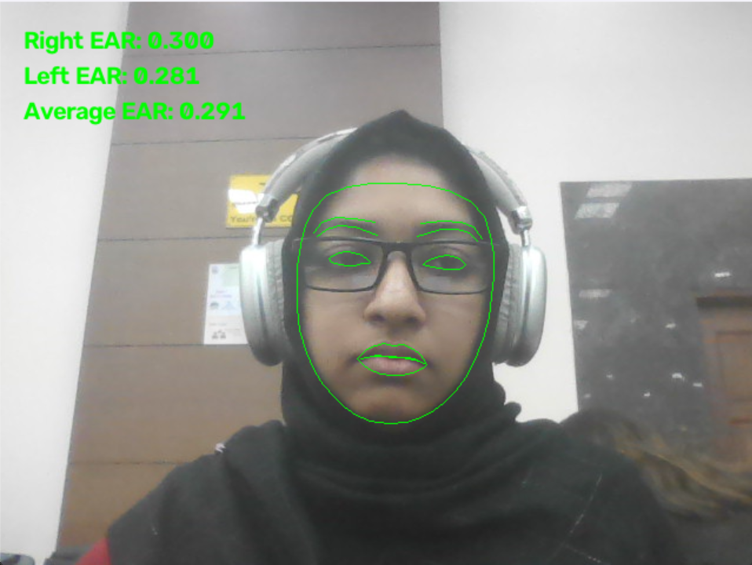
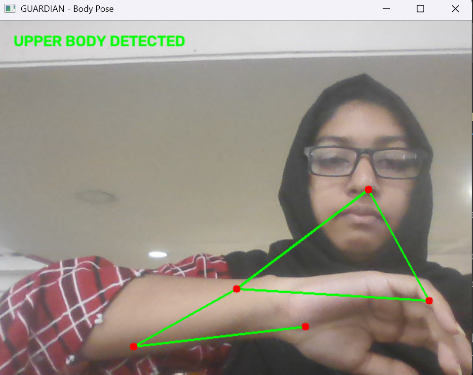
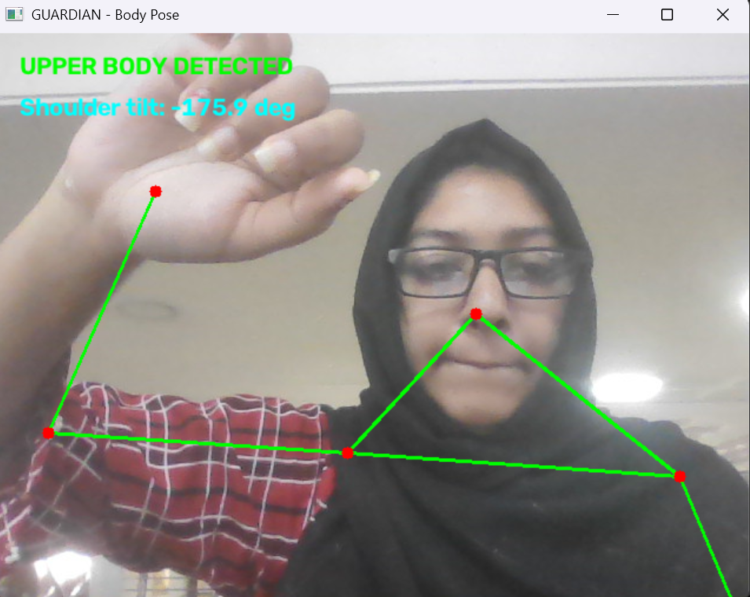

Pipeline inspection
Reviewed pose_detector.py and feature_extractor.py, and created backup copies before further edits.
Face landmarks, eye-openness measurement, upper-body pose estimation, and geometric feature extraction — a record of the current local prototype.
Today’s work focused on checking the upper-body pose pipeline and validating the arm-elevation feature before adding data logging. The webcam-based MediaPipe Pose Landmarker pipeline is in place, and the feature-extraction module contains an Eye Aspect Ratio (EAR) helper and an arm-angle function. The arm-elevation readings are not yet validated, so this report records the issue honestly rather than presenting the calculation as complete.
Reviewed pose_detector.py and feature_extractor.py, and created backup copies before further edits.
Confirmed that Python’s math.degrees(math.acos(x)) returns 0°, 90°, and 180° for cosine inputs 1, 0, and −1.
Observed readings did not match the expected angle range. The source of the discrepancy remains under investigation.
Insert the screenshots captured during development in the four image slots below. Keep this gallery between the overview and methods so readers can see the implementation evidence before the technical explanation.




For six eye landmarks, two vertical distances are compared with the horizontal eye width. This helps quantify whether the eye appears open or closed.
The distance function uses Euclidean distance. Landmark ordering must match the selected eye contour. Thresholds should be calibrated and evaluated across users, lighting conditions, and camera positions.
def calculate_ear(landmarks, eye_points):
p1 = landmarks[eye_points[0]]
p2 = landmarks[eye_points[1]]
p3 = landmarks[eye_points[2]]
p4 = landmarks[eye_points[3]]
p5 = landmarks[eye_points[4]]
p6 = landmarks[eye_points[5]]
vertical_1 = distance(p2, p6)
vertical_2 = distance(p3, p5)
horizontal = distance(p1, p4)
if horizontal == 0:
return 0.0
return (vertical_1 + vertical_2) / (2.0 * horizontal)The detector calculates the orientation of the line joining the left and right shoulders, then normalizes the result to the range −90° to +90°.
This describes shoulder-line orientation in the image. It is not an arm-raising angle. Image coordinates increase downward, so the sign may differ from conventional Cartesian diagrams.
dx = x2 - x1
dy = y2 - y1
shoulder_angle = math.degrees(
math.atan2(dy, dx)
)
if shoulder_angle > 90:
shoulder_angle -= 180
elif shoulder_angle < -90:
shoulder_angle += 180The upper-arm vector runs from shoulder to elbow. The torso reference vector runs from shoulder to the same-side hip. The angle between these vectors estimates the arm's position relative to the torso.
arm_x = elbow[0] - shoulder[0]
arm_y = elbow[1] - shoulder[1]
torso_x = hip[0] - shoulder[0]
torso_y = hip[1] - shoulder[1]
arm_length = math.hypot(arm_x, arm_y)
torso_length = math.hypot(torso_x, torso_y)
if arm_length == 0 or torso_length == 0:
return None
dot_product = arm_x * torso_x + arm_y * torso_y
cosine = dot_product / (arm_length * torso_length)
cosine = max(-1.0, min(1.0, cosine))
angle = math.degrees(math.acos(cosine))
return angleIdealized upright reference: arm down ≈ 0°, arm horizontal ≈ 90°, arm overhead ≈ 180°. Camera viewpoint, torso lean, occlusion, and landmark error can change the observed values.
The helper function builds an arm vector from shoulder to elbow and a torso-reference vector from shoulder to hip. It then uses the dot product to calculate the angle between those vectors.
arm_x = elbow[0] - shoulder[0]
arm_y = elbow[1] - shoulder[1]
torso_x = hip[0] - shoulder[0]
torso_y = hip[1] - shoulder[1]
arm_length = math.hypot(arm_x, arm_y)
torso_length = math.hypot(torso_x, torso_y)
dot_product = arm_x * torso_x + arm_y * torso_y
cosine = dot_product / (arm_length * torso_length)
cosine = max(-1.0, min(1.0, cosine))
angle = math.degrees(math.acos(cosine))The feature-extraction module also includes a helper for Eye Aspect Ratio (EAR), which compares vertical eye-landmark distances with the horizontal distance between eye corners. EAR can support blink or eye-closure analysis after its landmark mapping and thresholds are validated for the chosen model and use case.
The degree-conversion sanity check passed. However, the observed webcam measurements did not align with the expected arm positions, so the feature is not considered validated.
| Test | Expected (approx.) | Observed | Status |
|---|---|---|---|
| Arm down | 0° | −1.5° reported | Recheck output source |
| Arm horizontal | 90° | −8.4° reported | Investigating |
| Arm overhead | 180° | −12° reported | Investigating |
| Python degree-conversion sanity check | 0°, 90°, 180° | 0°, 90°, 180° | Passed |
calculate_arm_elevation() implementation using math.acos() as shown. This suggests the displayed/recorded value may come from a different calculation or running code, or that the source of the output has not yet been isolated. The root cause is unresolved as of this report.Current priority Correct and validate arm-elevation measurements before building downstream scoring or logging around them.